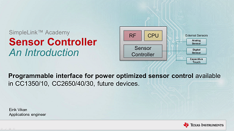

Introduction
=============
This is an overview file for the SimpleLink Academy workshops. Below you can find links to the individual lab instructions.
The projects and instructions can also be found by opening Resource Explorer inside Code Composer Studio when the SimpleLink Academy installer is finished. You may need to restart CCS to see the new contents.
Some of the dynamic content in the instructions will only function correctly when viewed inside Code Composer Studio's Resource Explorer, with Chrome or with Firefox.
Getting started
============
<span id="downloadLink"></span>
Every lab assignment will tell you what you need to do and install, but [Code Composer Studio `6.1.3+`](http://processors.wiki.ti.com/index.php/Download_CCS) must in any case be installed to do the code assignments.
It is also recommended to install the latest [TI BLE SDK v2.x](http://www.ti.com/ble-stack) as that also includes a compatible TI-RTOS package.
[[b! Use Resource Explorer 'Classic' for SimpleLink Academy material
If you are using Code Composer Studio 6.2.x it is necessary to use the 'Classic' version of Resource Explorer to view the training material and import the projects.

]]
Labs
============
TI-RTOS
---------
Lab | Content
---------------------------------------------------------------|------------------------
[Basics](modules/tirtos_01_basic/tirtos_01_basic.html) | RTOS concepts such as Task (thread), Semaphore, Interrupt, Execution graphing.
[IR Generation](modules/tirtos_02_irgeneration/tirtos_irgeneration.html) | Integrate IR Generation driver into simple RTOS project
Bluetooth Low Energy
---------------------
Lab | Content
-----------------------------------------------------------------------------|------------------------
[Fundamentals](modules/ble_01_basic/ble_01_basic.html) | Setting up the debug environment, connecting to Project Zero using the Device Monitor PC tool, reading and writing characteristic data, changing the advertisement/device name.
[Bluetooth Developer Studio](modules/ble_01_bds/ble_01_bds.html) | Learn how to use the Bluetooth Developer Studio GUI by Bluetooth SIG and the TI Code Generator plugin to accelerate the development of your own custom services.
[Custom Profile](modules/ble_01_custom_profile/ble_01_custom_profile.html) | Explanation of the GATT and ATT protocols that Bluetooth Low Energy data exchange is based on, a walk-through of how to implement a custom Bluetooth service using the APIs provided in the TI BLE SDK, and a basic code generator for custom services.
[Simple Network Processor](modules/ble_snp_sap_intro/ble_snp_sap_intro.html) | An introduction to the SimpleAP / SAP library used for controlling the CC2640 acting as a Simple Network Processor via a serial interface.
Proprietary RF
---------------------
**Note:** It is recommended to use [TI-RTOS 2.20.x](http://software-dl.ti.com/dsps/dsps_public_sw/sdo_sb/targetcontent/tirtos/index.html) for the Proprietary RF examples as the text and screenshots are based on this release, but the examples are also present in TI-RTOS 2.18.x.
Lab | Content
---------------------------------------------------------------------------------------------|------------------------
[Basic RX and TX](modules/prop_01_basic/prop_01_basic.html) | Code Composer Studio, SmartRF™ Studio training. Import, modify, build and run RF examples for the CC13xx devices through a series of tasks.
[Wireless Sensor Network example](modules/prop_02_wsn_example/prop_02_wsn_example.html) | Set up a Concentrator and one (or more) Node(s) in a Wireless Sensor Network using the WSN example included in TI-RTOS.
[EasyLink Network Processor example](modules/prop_03_easylink_nwp/prop_03_easylink_nwp.html) | Use the EasyLink serial AT command API to control the proprietary radio to send and receive data.
[CC1350 Dual Band Launchpad Out of the Box Demo](modules/prop_04_cc1350lpdm/prop_04_cc1350lpdm.html) | Use the Sensortag iOS/Android Smartphone app to download firmware images over the air via BLE and convert the CC1350 from a BLE device into a sub-1GHz device.
[CC1350 Dual Band Launchpad Project zero](modules/prop_05_cc1350lpdm_project_zero/prop_05_cc1350lpdm_project_zero.html) | Follow this training to learn how to create firmware images that can be downloaded via the BLE OAD service to a CC1350 LaunchPad.
Sensor Controller Studio
----------------
Lab | Content
------------------------------------------------------------------|------------------------
[I2C Light Sensor](modules/sc_01_basic/sc_01_basic.html) | Bring-up and walkthrough of how to use Sensor Controller Studio and the Sensor Controller peripheral to read serial data from an `I2C` light sensor.
[Create Project from Scratch](modules/sc_01_project_from_scratch/sc_01_project_from_scratch.html) | Create a Sensor Controller Studio project from scratch that uses the `ADC` interface, and integrate with a blank TI-RTOS project based on the 'Empty' example.
[Task Creation and Control](modules/sc_02_ranger/sc_02_ranger.html) | Create a Sensor Controller Studio project with two tasks, using `Time-to-Digital Converter` (TDC) and `ADC` inputs, and learn to control and communicate with these tasks from a TI-RTOS project. **Bonus tasks:** Integrate project with `Bluetooth LE` and `Proprietary RF` RF protocols.
Videos
===============
-------------------
[[+b **Develop your first Bluetooth Low Energy project** <p>Shows how to import and develop with CCS Cloud and Project Zero for the CC2650 LAUNCHXL</p>
<div style="display: block; position: relative; max-width: 100%;"><div style="padding-top: 56.25%;"><iframe src="http://players.brightcove.net/3816841626001/EJLmJ5a5g_default/index.html?videoId=5003295282001"
allowfullscreen
webkitallowfullscreen
mozallowfullscreen
style="width: 100%; height: 100%; position: absolute; top: 0px; bottom: 0px; right: 0px; left: 0px;"></iframe></div></div>
[View video on training.ti.com](https://training.ti.com/simplelink-academy-develop-your-bluetooth-low-energy-project)
+]]
[[+y **Introduction to the CC13xx/CC26xx Sensor Controller**  <p>Describes what the Sensor Controller programmable CPU is, how it works, and how to use it</p>
<div style="display: block; position: relative; max-width: 100%;"><div style="padding-top: 56.25%;"><iframe src="http://players.brightcove.net/3816841626001/EJLmJ5a5g_default/index.html?videoId=5107892045001"
allowfullscreen
webkitallowfullscreen
mozallowfullscreen
style="width: 100%; height: 100%; position: absolute; top: 0px; bottom: 0px; right: 0px; left: 0px;"></iframe></div></div>
[View video on training.ti.com](https://training.ti.com/simplelink-academy-introduction-sensor-controller)
+]]
[[+b **How to get started with CC1310 Packet RX/TX example** <p>Code Composer Studio makes it easy to utilize the TI-RTOS drivers for the SimpleLink CC13xx device. Using TI-RTOS and CCS, it is easy to get started with examples that showcase the capabilities of the CC1310.</p>
<div style="display: block; position: relative; max-width: 100%;"><div style="padding-top: 56.25%;"><iframe src="http://players.brightcove.net/3816841626001/EJLmJ5a5g_default/index.html?videoId=4616617318001"
allowfullscreen
webkitallowfullscreen
mozallowfullscreen
style="width: 100%; height: 100%; position: absolute; top: 0px; bottom: 0px; right: 0px; left: 0px;"></iframe></div></div>
[View video on training.ti.com](https://training.ti.com/how-get-started-cc1310-packet-rxtx-example-0)
+]]
[[+y **CC13xx Wireless Sensor Network Node and Concentrator example** <p>The Wireless Sensor Network Concentrator and Node examples showcases how to use Sub-1GHz Wireless MCU technology with sensor-based applications.</p>
<div style="display: block; position: relative; max-width: 100%;"><div style="padding-top: 56.25%;"><iframe src="http://players.brightcove.net/3816841626001/EJLmJ5a5g_default/index.html?videoId=4616617316001"
allowfullscreen
webkitallowfullscreen
mozallowfullscreen
style="width: 100%; height: 100%; position: absolute; top: 0px; bottom: 0px; right: 0px; left: 0px;"></iframe></div></div>
[View video on training.ti.com](https://training.ti.com/wireless-network-node-concentrator-example)
+]]
[[+b **Why Sub1-GHz?** <p>In this video, we describe the advantages of using Sub-1GHz wireless communication, and why Sub-1GHz communication can increase range, reduce power consumption, and increase reliability.</p>
<div style="display: block; position: relative; max-width: 100%;"><div style="padding-top: 56.25%;"><iframe src="http://players.brightcove.net/3816841626001/EJLmJ5a5g_default/index.html?videoId=4620055515001"
allowfullscreen
webkitallowfullscreen
mozallowfullscreen
style="width: 100%; height: 100%; position: absolute; top: 0px; bottom: 0px; right: 0px; left: 0px;"></iframe></div></div>
[View video on training.ti.com](https://training.ti.com/why-sub-1ghz)
+]]
Changelog
============
v1.11 - November 4th 2016
--------
* Update BLE projects to use BLE SDK v2.2.1
* Update all projects to use TI-RTOS 2.20.01.08
v1.10 - October 12th 2016
--------
* Add TI-RTOS IR Generation training
* Add Bluetooth Developer Studio training
* Update Simple Application Processor + Network Processor - Introduction to use MSP432 LaunchPad + CC2650 Module BoosterPack Hardware
* Add MSP432 Project Zero to be used with updated Simple AP + Simple NP Introduction
* Removed SimpleNP and SimpleAP CC2650_LAUNCHXL projects
* Add solution files for BLE custom profile training
v1.09 - September 16th 2016
-------------
* Compatible with CCS 6.2.0
* Fix a problem with a build variable that changed meaning from CCS 6.1.3 to 6.2.0.
* Default to parallel build in project files
* Add Sensor Controller workshops
* [Create Project from Scratch](modules/sc_01_project_from_scratch/sc_01_project_from_scratch.html)
* [Task Creation and Control](modules/sc_02_ranger/sc_02_ranger.html)
* Add Proprietary RF workshops
* CC1350 Dual Band Out of the Box Demo
* CC1350 Dual Band Launchpad Project Zero
* Add videos
* Developing your first project with Project Zero and CCS Cloud
* Introduction to the Sensor Controller
* How to get started with CC1310 Packet RX/TX example
* CC13xx Wireless Sensor Network Node and Concentrator example
* Why Sub1-GHz?
* Fix issue with 'app usage' code for code generator in Custom Profile workshop
v1.08 - June 21st 2016
--------
* Update BLE projects to use BLE SDK v2.2.0
* Update all projects to use TI-RTOS 2.18
* Removed custom version of HostTest
* Added Proprietary RF workshops
* Basic RX/TX
* Wireless Sensor Network
* EasyLink serial API
v1.07 - May 4th 2016
--------
* Fix direction of memcpy for the service generator in GetParameter_XX.
* Remove references to Board_KEY_RIGHT from TI-RTOS Lab 1.
v1.06 - March 10th 2016
--------
* Update to use BLE SDK v2.1.1
* Added CCS Desktop Projects
* [HostTest](modules/projects/ble_hosttest/information.html)
* [Project Zero](modules/projects/ble_projectzero/information.html)
* Change BLE examples to use `Project Zero` instead of `TrainingTag`
* Add support for eval kits CC2650-LAUNCHXL, CC2650-STK and CC2650DK to
* Project Zero
* TI-RTOS Basic
* HostTest
v1.05 - January 29th 2016
--------
* Add training modules
* [Simple Network/Application Processor Introduction](modules/ble_snp_sap_intro/ble_snp_sap_intro.html)
* Added CCS Desktop projects
* SimpleNP - SimpleNP project ported CC2650_LAUNCHXL
* SimpleAP -SimpleAP project modified to work on CC2650_LAUNCHXL with SCIF UART display added
v1.04 - January 21st 2016
--------
* Add training modules
* [Sensor Controller Studio Basic - I2C Light Sensor](modules/sc_01_basic/sc_01_basic.html)
* Change projects to support CC2650_LAUNCHXL by default
v1.03 - August 25th 2015
--------
* Initial release.
* Targeting CCS Desktop 6.1, TI-RTOS for SimpleLink Wireless MCUs 2.13.00.06 and TI BLE SDK v2.1.
* Added training modules
* TI-RTOS Basics
* Bluetooth Smart Basics
* Bluetooth Smart Custom profile
* Added CCS Desktop projects
* ~~HostTestTag~~ - HostTest project modified to work on SensorTag rev 1.3 and Devpack-Debug rev 1.2.
* ~~BLE TrainingTag~~ - SimpleBLEPeripheral project modified to work on SensorTag rev 1.3 and Devpack-Debug rev 1.2
* [TI RTOS Basics Lab 1](modules/projects/tirtos_basic_lab1/information.html) - Basic project without radio stack.